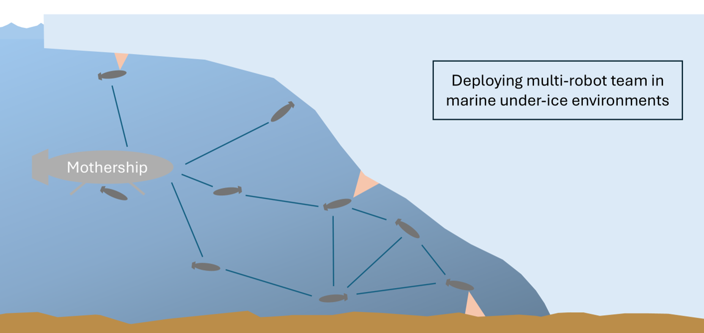

Hybrid Decentralization for Multi-Robot Orienteering with Mothership-Passenger Systems

Overview
We present a hybrid centralized-decentralized planning algorithm for a multi-robot system consisting of a Mothership robot and multiple Passenger robots. In this system, the Passenger robots execute tasks while the Mothership provides support. This paper addresses the challenge of planning Passenger robot movements, framing it as a Stochastic Multi-Agent Orienteering Problem (SMOP) complicated by factors like stochastic operational efforts and disruptive events. We optimize the task completion efficiency of the system by combining centralized solutions from the Mothership with local plans from Passengers to enhance system resilience. Our contributions include defining the SMOP, developing a solution using Decentralized Monte Carlo Tree Search, presenting a hybrid algorithm that integrates centralized plans into the distributed framework, and evaluating the algorithm’s performance in a simulated environment. Our results show that our hybrid approaches outperform fully centralized and fully distributed algorithms in highly-dynamic scenarios with up to a 26.6% increase in task completion efficiency over baseline methods.
Hybrid Decentralized Mission Planning
Our hybrid planning algorithm equips the mothership and passengers to each solve solutions to the SMOP using the unique observations available to each robot. The mothership uses a centralized planner to solve joint multi-robot solutions to a centralized variant of the SMOP, which are then shared with connected passengers. The plans produced by the mothership are informed by information that it has aggregated from connected passengers during runtime. However, as communication links between the mothership and passengers are not guaranteed, we also equip each passenger robot with a local decentralized planner. Using local observations and sets of candidate plans received from neighboring robots, each passenger plans routes that are well-informed by their local neighborhood. Meanwhile, plans sent by the mothership guide global coordination.
During operations, passengers store a history of high-value plans that they have both received from the mothership and developed locally, which they then compare against any new local plans. By referencing a history of past plans, even passengers that have lost communication with the mothership or neighboring robots can take informed, coordinated actions. Altogether, this framework supports hybrid centralized-decentralized replanning, even with asynchronous communciations.